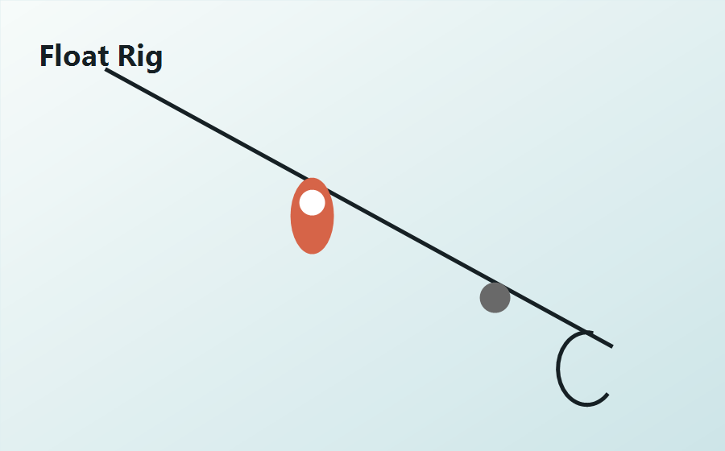
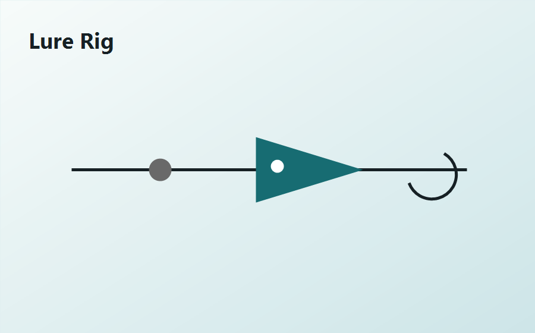
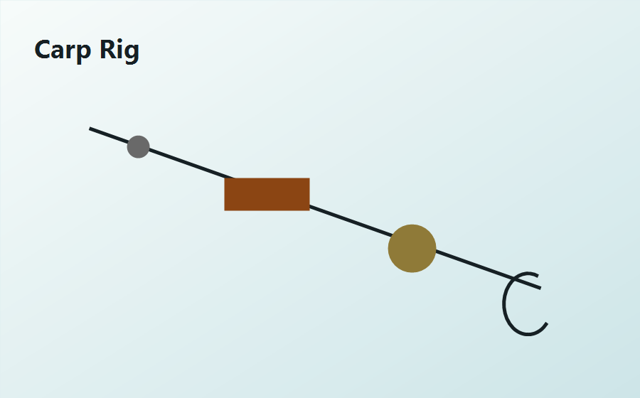

광고 영역
Google AdSense 상단 반응형 배너 또는 낚시용품 제휴 배너 자리
Rig Guides
채비법 가이드


Spot Notes
낚시 포인트
서해 · 방파제
태안권 생활낚시 포인트
가족 출조, 주차, 화장실, 만조 전후 입질 시간을 중심으로 정리한 포인트 메모입니다.
수도권 · 민물
한강권 루어 워킹 코스
퇴근 후 짧게 다녀오기 좋은 구간과 계절별 베이트피시 움직임을 함께 봅니다.
남해 · 선상
통영권 선상 예약 전 확인사항
기상, 선비, 장비 대여, 대상어별 채비 준비물을 출조 전 체크리스트로 제공합니다.
Season Plan
이번 시즌 추천 운영 콘텐츠
6월
장마 전 무늬오징어, 광어, 붕어 밤낚시
7월
한치 선상, 계곡 피라미, 야간 방파제
8월
휴가철 생활낚시, 가족 포인트, 안전 수칙
Monetization Layout
광고를 넣기 쉬운 구조
상단 배너, 본문 중간 네이티브 광고, 사이드 300x250 광고, 하단 제휴 링크 영역을 분리해 두었습니다. 애드센스 심사 전에는 광고 안내 박스로 표시하고, 승인 후 코드만 교체하면 됩니다.
상단 반응형
본문 중간
사이드 배너
하단 제휴